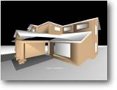

3. Movimento de Câmera Objetivo: Mover a câmera
no espaço 3D |
 |
Até agora nós usamos apenas uma câmera
estática. Mas no real mundo dos jogos de PC nós queremos que ela
siga o personagem principal, seja em visão em terceira pessoa (como Tomb
Raider) ou talvez uma visão mais pessoal como a visão em primeira
pessoa (usada em Quake ou Unreal).
Dê uma olhada na demonstração de 'Marko' do Sr Sibly para
um grande exemplo de uma câmera inteligente. O código para controlar
sua câmera pode ser tão complicado quanto o código principal
do jogo... se você quiser!
Vamos observar a um exemplo básico:
| Graphics3D 800,600 SetBuffer BackBuffer() camera=CreateCamera() CameraViewport camera,0,0,800,600 light=CreateLight() house=LoadMesh( "house.3ds" ) RotateEntity house,0,90,0 While Not KeyHit(1) If KeyDown(200) Then MoveEntity camera,0,0,1 EndIf If KeyDown(208) Then MoveEntity camera,0,0,-1 EndIf If KeyDown(203) Then TurnEntity camera,0,1.0,0 EndIf If KeyDown(205) Then TurnEntity camera,0,-1.0,0 EndIf UpdateWorld RenderWorld Text 335,500,"Movimento de Câmera" Flip Wend End |
Usando o as setas do teclado você pode explorar o ambiente,
PARA CIMA e PARA BAIXO movem para frente e para trás - ESQUERDA e DIREITA
giram a câmera em seu próprio eixo.
Não há realmente muito mais que isto, nós já cobrimos
movimento e rotação no tutorial anterior. A única diferença
aqui é que nós estamos avançando na tela. Da mesma maneira
que nós movemos um objeto, nós usamos os mesmos comandos MoveEntity
e TurnEntity para mover a câmera. Isso faz o Blitz3D ser uma ótima
linguagem para aprender! Em vez de ter que se lembrar de dezenas de comandos
diferentes para objetos, câmeras e luzes nós apenas usamos as mesmas
instruções.
Talvez você queira fazer a visão subir e descer, como o movimento
de caminhada em Quake ou Doom... Bastante fácil, apenas crie uma repetição
que mova a altura da câmera para cima e para baixo. Eu deixarei a parte
de codificação para você!
Por padrão o Blitz3D deixará de desenhar um objeto se ele estiver
muito longe da câmera, isto é conhecido como 'alcance da câmera'.
Qualquer coisa além dessa região não será desenhada.
Isto é muito útil se tivermos muitos objetos na tela, tudo que
estiver longe não será mostrado - o que significa que nós
ganhamos algum tempo de processamento extra.
Mas espere... o Blitz3D também pode nos dar um efeito de névoa!
Nós vimos vários jogos que usam isto (Unreal por exemplo). Quanto
mais distante da tela menos visível será o objeto. Para mais informações
sobre estas funções veja o manual na parte de comandos de câmera.
Usados corretamente, os comandos de névoa podem dar ao mundo 3D um visual
natural sinistro!